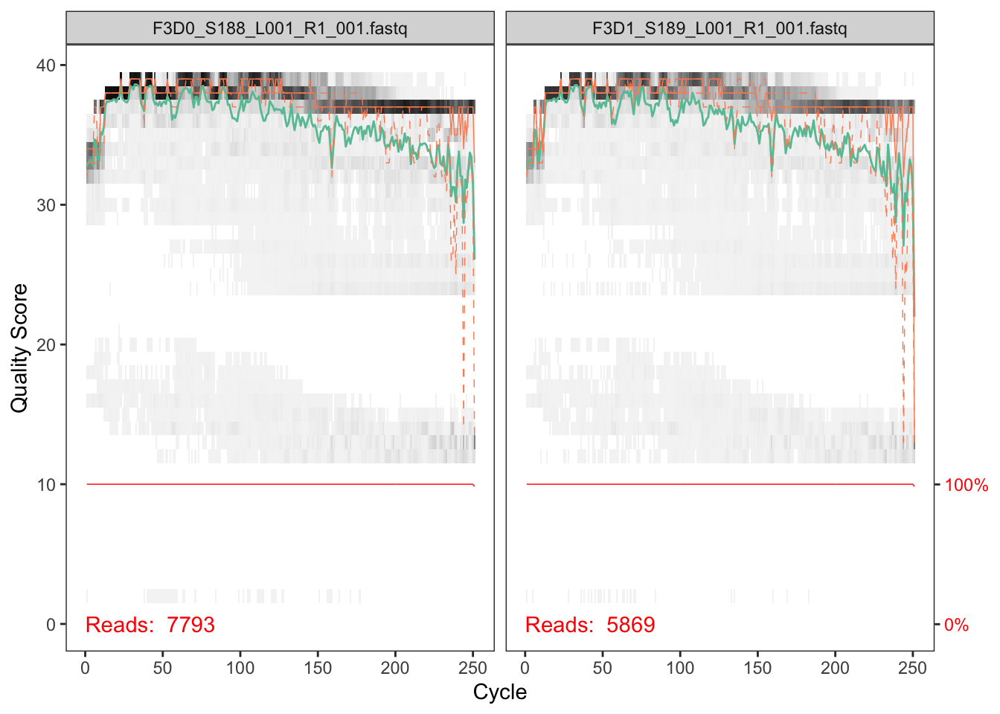
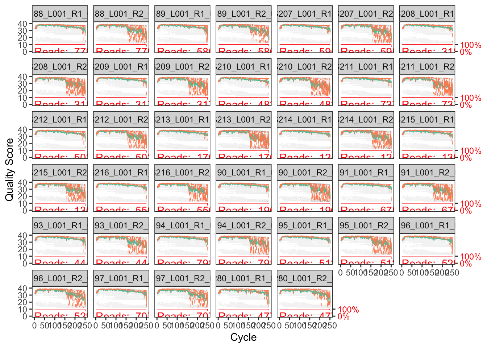
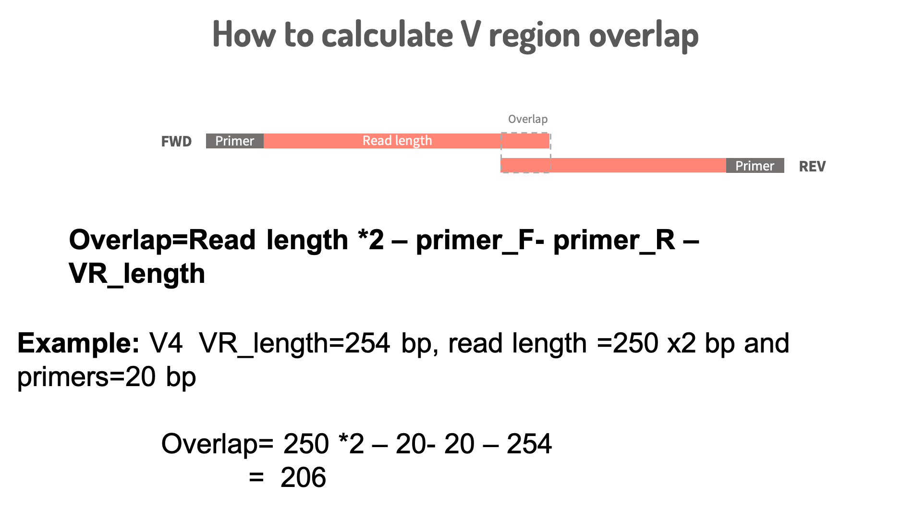

4 DADA2
4.1 DADA2 pipeline (v1.2)
From now on, we will be working on the DADA2 package version 1.12. DADA2 has great documentation and an excellent tutorial online.Please go to the following link http://benjjneb.github.io/dada2/tutorial.html
All the notes from now on are my additional comments to help you follow the pipeline:
4.1.1 Data for the tutorial
The data to use for the tutorial can be downloaded from here
4.1.2 Getting ready ( load packages and get file list)
Functions that we will be using here are :
- list.files()
- sort()
- strsplit()
- basename()
- sapply()
4.1.3 Inspect read quality profiles
Read in files
library(dada2);## Loading required package: Rcpplibrary(limma)
path <- "MiSeq_SOP/"
list.files(path)## [1] "F3D0_S188_L001_R1_001.fastq" "F3D0_S188_L001_R2_001.fastq"
## [3] "F3D1_S189_L001_R1_001.fastq" "F3D1_S189_L001_R2_001.fastq"
## [5] "F3D141_S207_L001_R1_001.fastq" "F3D141_S207_L001_R2_001.fastq"
## [7] "F3D142_S208_L001_R1_001.fastq" "F3D142_S208_L001_R2_001.fastq"
## [9] "F3D143_S209_L001_R1_001.fastq" "F3D143_S209_L001_R2_001.fastq"
## [11] "F3D144_S210_L001_R1_001.fastq" "F3D144_S210_L001_R2_001.fastq"
## [13] "F3D145_S211_L001_R1_001.fastq" "F3D145_S211_L001_R2_001.fastq"
## [15] "F3D146_S212_L001_R1_001.fastq" "F3D146_S212_L001_R2_001.fastq"
## [17] "F3D147_S213_L001_R1_001.fastq" "F3D147_S213_L001_R2_001.fastq"
## [19] "F3D148_S214_L001_R1_001.fastq" "F3D148_S214_L001_R2_001.fastq"
## [21] "F3D149_S215_L001_R1_001.fastq" "F3D149_S215_L001_R2_001.fastq"
## [23] "F3D150_S216_L001_R1_001.fastq" "F3D150_S216_L001_R2_001.fastq"
## [25] "F3D2_S190_L001_R1_001.fastq" "F3D2_S190_L001_R2_001.fastq"
## [27] "F3D3_S191_L001_R1_001.fastq" "F3D3_S191_L001_R2_001.fastq"
## [29] "F3D5_S193_L001_R1_001.fastq" "F3D5_S193_L001_R2_001.fastq"
## [31] "F3D6_S194_L001_R1_001.fastq" "F3D6_S194_L001_R2_001.fastq"
## [33] "F3D7_S195_L001_R1_001.fastq" "F3D7_S195_L001_R2_001.fastq"
## [35] "F3D8_S196_L001_R1_001.fastq" "F3D8_S196_L001_R2_001.fastq"
## [37] "F3D9_S197_L001_R1_001.fastq" "F3D9_S197_L001_R2_001.fastq"
## [39] "filtered" "HMP_MOCK.v35.fasta"
## [41] "Mock_S280_L001_R1_001.fastq" "Mock_S280_L001_R2_001.fastq"
## [43] "mouse.dpw.metadata" "mouse.time.design"
## [45] "stability.batch" "stability.files"# Forward and reverse fastq filenames have format: SAMPLENAME_R1_001.fastq and SAMPLENAME_R2_001.fastq
fnFs <- sort(list.files(path, pattern="_R1_001.fastq", full.names = TRUE))
fnRs <- sort(list.files(path, pattern="_R2_001.fastq", full.names = TRUE))
# Extract sample names, assuming filenames have format: SAMPLENAME_XXX.fastq
tmp<-strsplit(basename(fnFs), "_")
# As tmp is a list of vectors, we will have to use sapply function to get the first position out from each vector. The symbol '[' tells sapplly function that it is a vector and 1 specifies the vector index
samples.names<-sapply(tmp,'[',1)4.1.4 Lets make plots to look at the quality for multiple files
plotQualityProfile(fnFs[1:2])## Scale for 'y' is already present. Adding another scale for 'y', which will
## replace the existing scale.
joint_fnames<-c(rbind(fnFs,fnRs))
plotQualityProfile(joint_fnames)## Scale for 'y' is already present. Adding another scale for 'y', which will
## replace the existing scale.
if there are too many files, use arrangegrob. See here here for details
For the rest of the DADA2 pipelien please visit
4.2 Some tips:
At every step check how many reads are getting filtered. This is very important to make sure that you are not losing too much data.
If in the filtering step you are losing too many reads, relax the maxEE from 2 to 3 or more. Also check the length that you are truncating at.
If you are using cutAdapt for quality trimming, you don’t have to use truncation in filterandtrim function of DADA2
Always keep in mind the overlap length for your region of interest. see the figure below for calculation:

- If you lose too many sequences to chimera removal, please check that the primers are removed properly.